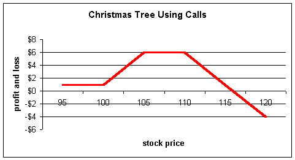

Christmas Tree
A Christmas tree strategy is similar to a ratio spread. For calls, it involves the buying of one strike and the sale of two higher strikes (for example, buy $50 call, sell a $55 call, sell a $60 call); for puts, a trader will purchase one strike and sell two lower strikes (for example, buy $50 put, sell a $45 put, sell a $40 put). If you read our section on condor spreads, you may recognize the strategy as a long condor spread without the upper protective wing (for calls) or the lower protective wing (for puts).
The idea behind this strategy is that the trader lowers the cost basis of the long position by selling two options against it, thereby accelerating the rate of return on investment. However, unlike the ratio spread where multiple calls of a single higher strike are sold against the long position, the trader instead sells multiple strikes. It is a lower risk, lower reward strategy relative to the ratio spread.
Example:
A trader is bullish on a stock trading at $100 and wants to go long a Christmas tree. He will buy the $100 call, sell the $105 call, and sell the $110 call for a net credit of $1. The profit and loss diagram looks like this:
The trade is usually placed at a small credit and reaches maximum profit at the strike of either short position. If the stock moves above the highest short call, $110 in this example, the trader will start to lose profits and eventually end up with losses if the stock rises far enough.
The trader is effectively taking a little more conservative stance (although there is still the risk of unlimited losses) relative to the ratio spreader.
Examples:
Corning (GLW) is currently trading for $59-3/4 with the following option quotes. Let's compare a ratio spread with a Christmas tree and see how they differ. Investor A buys the $60 call and sells two $65 calls.
|
Calls |
Puts |
|||||
|
Bid |
Ask |
Bid |
Ask |
|||
|
Jan $50 |
13 5/8 |
14 3/8 |
4 |
4 3/8 |
||
|
Jan $55 |
11 |
11 3/4 |
5 7/8 |
6 3/8 |
||
|
Jan $60 |
8 1/2 |
8 3/4 |
8 1/4 |
8 3/4 |
||
|
Jan $65 |
6 1/4 |
6 3/4 |
10 7/8 |
11 5/8 |
||
|
Jan $70 |
4 3/4 |
5 1/8 |
14 1/8 |
14 7/8 |
||
This produces a credit of $3-3/4 as follows:
Buy $60 = -$8 3/4
Sell 2 $65 = +$12 1/2
Net credit $3 3/4
Investor B enters a Christmas tree and buys the $60, sells the $65 and sells the $70 for a net credit of $2-1/4 as follows:
Buy $60 = - $8 3/4
Sell $65 = +$6 1/4
Sell $70 = +$4 3/4
Net credit +$2 1/4
Notice the higher reward, $3-3/4 credit versus $2-1/4, with the ratio spread indicating the higher risk.
From a profit and loss standpoint:
It is now easy to see the differences in the two strategies. The ratio spread has a higher reward if the stock should fall or hit $65, the point of maximum profit for both strategies. If the stock collapses, the ratio spread will keep the initial $3-3/4 credit while the Christmas tree will keep $2-1/4. If the stock hits $65, the ratio spread makes an additional $5, the difference in strikes, for a total profit of $8-3/4. Similarly, the Christmas tree will make $5 at a stock price of $65 for a total of $7-1/4.
However, the ratio spread starts to lose profits for any stock price above $65, while the Christmas tree does not start to lose them until $70 -- one strike higher.
At a stock price of $66-1/2, the two strategies are even; this is the point where the red line crosses the blue line. Beyond $66-1/2, the Christmas tree strategy dominates the ratio spread. This can be seen by the fact that the blue line (Christmas tree) is above the red line (ratio spread) for all stock prices above $66-1/2. Likewise, the ratio spread wins for all stock prices below $66- 1/2 and we can see that its profit and loss line is above the Christmas tree's for all stock prices below this level.
The ratio spread will start heading into losses after the break-even $73-3/4, while the Christmas tree will not start taking losses until the stock exceeds $77-1/4.
Christmas tree using puts
The Christmas tree with puts is used for the opposite reasons as above. Here, the trader is bearish and wants to buy puts but sell two additional lower strikes to offset the cost.
Assume a trader is bearish on a stock trading at $100 and wants to go long a Christmas tree using puts. He will buy the $100 put, sell the $95 put, and sell the $90 put for a net credit of $1. The profit and loss diagram looks like this:

The trader will start to profit if the stock falls below $100. At a stock price of $95, he will reach the maximum profit of $6 ($5 difference in strikes + $1 credit) and remain at this maximum amount to a stock price of $90. Below $90, the trader starts to lose profits and will head into losses below the break-even point of $84.
Examples:
Let's use the above option quotes again and compare a ratio spread with a Christmas tree. Investor A again will enter a ratio spread and buy the $60 put and sell two $55 puts to finance the purchase. His net credit is $3 as follows:
Buy $60 put = -$8 3/4
Sell 2 $55 = +$11 3/4
Net credit $3
Investor B enters a Christmas tree and buys the $60 put, and sells the $55 and $50 puts for a credit of $1 1/8:
Buy $60 put = -$8 3/4
Sell $55 put = +$5 7/8
Sell $50 put = +$4
Net credit $1 1/8
The profit and loss diagrams for the two strategies look like this:
Again, we see the ratio spread and Christmas tree make money if the stock falls below $100. This should be the case, as both traders own the $100 put. However, Investor A with the ratio spread will dominate as a higher credit was received from the initial trade ($3 versus $1-1/8). This can be seen by the fact the red line is above the blue line through this range.
If the stock falls to $90, the ratio spread will reach maximum profit of $8 ($5 difference in strike plus the initial $3 credit).
If the stock falls below $90, the ratio spread starts to lose profits; the Christmas tree will not start to lose them until the stock falls below $85. The two trades are strategies that will be equal at a stock price of $88.
Below $88, the Christmas tree dominates and we can see its profit and loss diagram is above the ratio spreads throughout this range. The ratio spread will incur losses below the break-even point of $82, while the Christmas tree's losses will occur below the break-even point of $79.
The Christmas tree is a nice strategy for those wanting to utilize short positions to offset the cost of long positions. They are a nice alternative for ratio spreads but still have unlimited loss potential, so will require level 3 option approval from your broker. Christmas trees are a lower risk, lower reward strategy relative to the ratio-spread counterpart.
If you like to enter ratio spreads, run through some numbers with the Christmas trees as well. You may find you like the risk-reward structure much better.